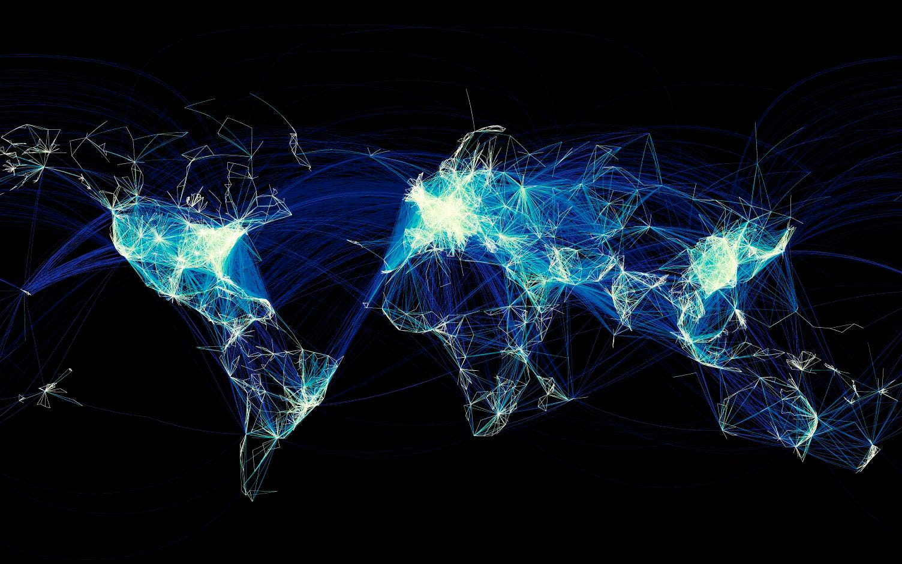

Everything is networked


Since Edos-Runyi paper about graph, we made huge progress in understanding how nature and the things we have created are networked and we saw thanks to the work of devoted scientists like … that the belief we had about the randomness of these networks was not always true because the power law plays more often a role in the architecture of such networks by organizing them in hubs that get the most inbound links. Our industrialized world was designed by processes that plan operations and responsibility by exploiting a particular form of graph named tree — That’s what all the organigramme of companies you know are but this form of organization seems not to fit the current network economy we are living where the complexity of relationships between things is not like a tree but a complex graph organized by hubs of interest, topic, sectors … depending on the point of view we take. In such hubs, driven graphs an event that seems far from you, your ideas, your country, your company, or any kind of thing can have a huge impact on them. So knowing what are the hubs and how they are connected helps mitigate the risk of being impacted by an event that we thought being outside of our scope before we map and understand the graph that says the opposite. A bank bankruptcy in Thailand impacted other countries. A subprime crisis in the USA impacted the whole world. The butterfly effect or the domino effect are names that we put on scientific theories that try to explain such kind of behavior but having mathematical knowledge helps get more understanding of this concept of networked elements. You may think that cognitive science has nothing to do with this if you don't understand that everything is networked and the network gets its number of links and nodes growing in time.
As everything tends to be linked to other things it may help to be interested in every kind of knowledge to see new links opportunity in this graph before they come to life that’s what an innovator does and understanding analogy helps a lot for forecasting such links.
PS: I spent this week understanding the political graph of my country and discovered what a political actor could not see without caring about graphs and networks.